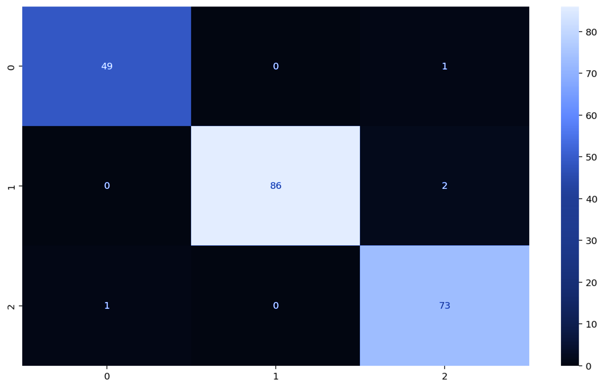
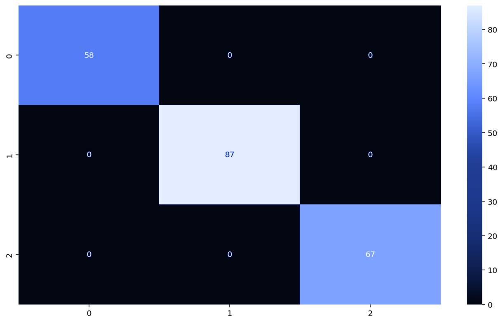
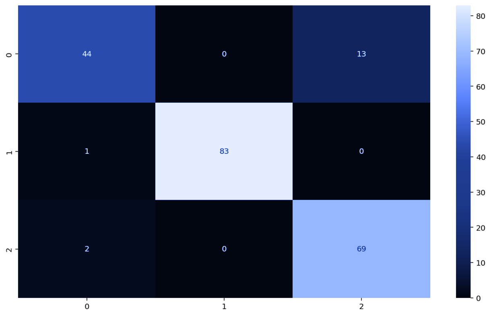
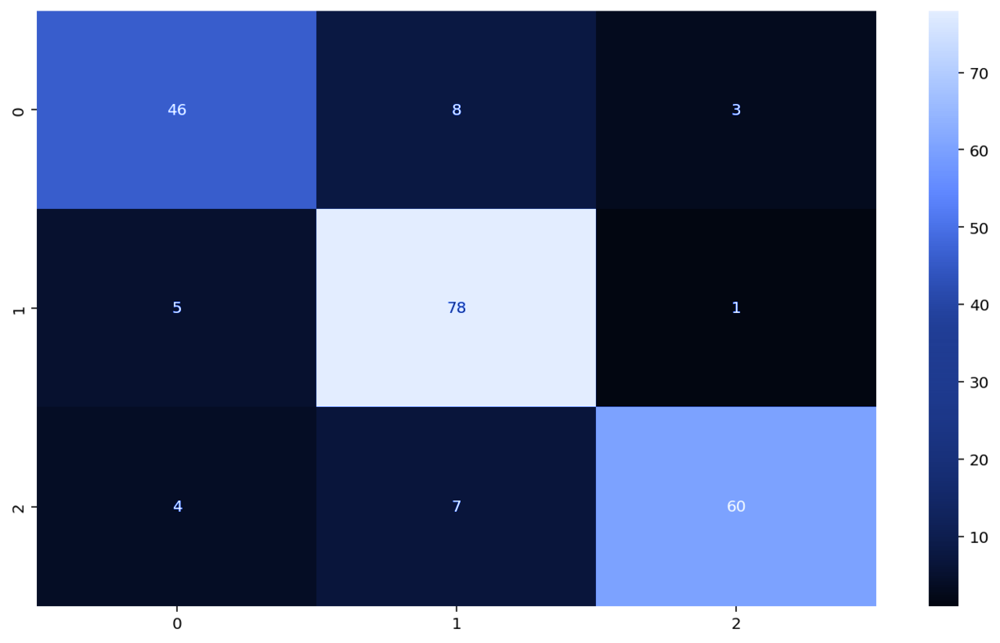

Has your milk gone bad? Watch how this machine learning algorithm figures it out using data.
Find Out MoreWell, drinking spoiled milk can lead to food poisoning, with the most common symptoms being abdominal pain, nausea, vomiting, and diarrhea. Thus, we wanted to build an AI model that can predict the quality of milk (high, medium, or low) to prevent food poisoning.
Let's get Started!Turbidity measures
the clarity of a liquid
The smell of spoiled milk is caused by the growth of lactic acid producing organisms
Spoiled milk tastes tart,
while higher grade milk
tastes sweet and bland
High grade whole
milk is 3.25% fat
The ideal pH of milk
lies between 6 and 7
The ideal temperature for milk
is under 46⁰ C or 114.8⁰ F
The K-Nearest Neighbors algorithm is a supervised machine learning method that assigns objects to classes most common among with k nearest neighbors where k is a positive integer in classification. With our dataset, it classified milk with unknown grade by assigning them into classes (high, medium, or low) based on their distance relative to milk objects with known grades. K-Nearest Neighbors had an accuracy of 99%, so we didn't have to do any optimizations.
Random forest is a machine learning method that trains by creating decision trees and outputs the class selected by the majority of the trees in classification. It was our most effective model that consistently gets an accuracy of 100% with no optimization.
A multi-layer perceptron is an artificial neural network with layers of nodes. It can separate data that cannot be separated linearly. MLP uses a supervised learning technique called backpropagation, a generalization of the least mean squares algorithm in the linear perceptron for training. Learning occurs in the perceptron by changing connection weights after each piece of data is processed, based on the amount of error in the output compared to the expected result. Initially, using a MLP for classifying milk grade did not work very well, with accuracies ranging from 40% to 70%. After grid search optimization and hyperparameter tuning, we managed to get an accuracy of 92.4%
Support Vector Machines is a supervised machine learning algorithm that maps data so that it can be easily categorized, even when the data is not otherwise linearly separable. SVM will then create a line/hyperplane to separate the data into classes. Using this new line, characteristics of new data can be used to predict the class of a new data point. The basic SVM method wasn't very effective, and had an accuracy of 40-70%. After a lot of grid search optimization and hyperparameter tuning, the accuracy increased to 86.7% which was still lower than we wanted.
Meet the Python Enjoyers (Batch D) .